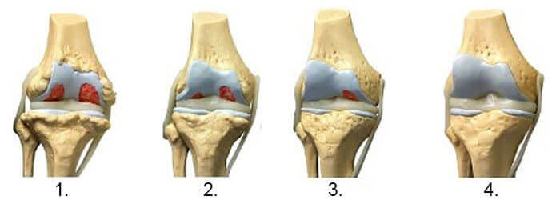

Uwaga! Jeśli cierpisz na bóle stawów, poniżej możesz zapoznać się z rekomendacją ordynatora Kliniki Ortopedii i Traumatologii Państwowego Instytutu Reumatologicznego dotyczącą możliwości praktycznie bezpłatnego leczenia bez interwencji medycznej!
Bóle stawów
Nie słuchaj oszustów, są zainteresowani przepisywaniem najdroższego i najskuteczniejszego leku.
W sierpniu 2018 r. w Warszawie, Poznaniu, Krakowie i kilku innych polskich miastach dokonano zatrzymań lekarzy reumatologów. Według organu śledczego, 102 z nich jest obecnie w areszcie, w tym ordynatorzy oddziałów reumatologii, a nawet kilku ministrów
Przyczyna aresztowań została dopiero niedawno podana przez organ śledczy, a powód jest szokujący. Reumatolodzy od 12 lat oszukują swoich pacjentów, przepisując nieskuteczne i drogie leki. Niestety ta praktyka jest powszechna w całym kraju, ponad milion ofiar może cierpieć z powodu oszustw lekarskich, szkody są nieobliczalne, a co najgorsze, wielu pacjentów leczonych drogimi lekami cierpi na jakąś formę niepełnosprawności.
Skontaktowałem się z Mariuszem Walczakiem , kierownikiem Oddziału Ortopedii i Traumatologii w Narodowym Instytucie Badawczym Reumatologii, aby zapytać o jego stanowisko w tej sprawie
Powiązane artykuły
Wywiad
Mariusz Walczak
To właśnie pan Mariusz Walczak zainicjował ponowne śledztwo wśród reumatologów. […]
—Panie Walczak, co dokładnie się stało?
Dokładnie to, co agencje rządowe powinny były zrobić dawno temu. Odziani na biało gangsterzy trafiają do więzienia za wieloletnie ukrywanie najtańszego i najskuteczniejszego leku na stawy! Proszę sobie wyobrazić, przez ostatnie 12 lat zmarło ponad milion osób! Ta praktyka jest powszechna zarówno w szpitalach prywatnych, jak i publicznych.
-- O jakim preparacie mowa?
Przede wszystkim są to produkty zagranicznych producentów, które aktywnie promują skorumpowani ordynatorzy oddziałów reumatologicznych. Następnie lekarze prowadzący otrzymują godziwe wynagrodzenie za przepisanie danego leku. Każdy lekarz ma listę leków, które musi przepisywać swoim pacjentom. .
Są to słabe leki takie jak:
- Diprospan
- Diklofenak
- Deksametazon
- Alflutop
- Movalis
- Mydocalm
- Meloksykam
- Prednizolon
- Teraflex
- Mukosat
- Aertal
- Chondrogard
- Artra
- Artrozan
- Fermatron
- Celebrex
- Diaflex
- Chondrolon
- Sirdalud
- Ketorolak
- Chondroksyd
- Flamax
- Allopurinol
- Zginanie
- Fermatron plus
- Artrosilene
Ale czy te leki są dostępne w aptekach w Polsce?
Tak, są dostępne. Nie oznacza to jednak, że produkty te naprawdę pomagają wyleczyć stawy. Jak powszechnie wiadomo, apteki to jednostki komercyjne. W zasadzie można porównać je do zwykłych sklepów. Sprzedają to, co przynosi największy zysk. Te leki dobrze się sprzedają, a są ku temu co najmniej dwa powody, które nie mają nic wspólnego z ich skutecznością.
Na półkach aptecznych jest wiele niepotrzebnych leków, za to naprawdę skutecznych preparatów do leczenia stawów brakuje.
Po pierwsze, leki są przepisywane nie tylko przez przekupionych lekarzy, ale także przez uczciwych, jak mieliśmy okazję zauważyć na różnych konferencjach organizowanych przez producentów farmaceutycznych. Niedoświadczeni lekarze przepisują to, co wybierają ich koledzy i co promują agresywne kampanie reklamowe. Tak właśnie trafiają na te leki.
Na półkach aptecznych jest wiele niepotrzebnych leków, za to naprawdę skutecznych preparatów do leczenia stawów brakuje.
Po drugie, leki te praktycznie nie mają konkurentów. Są specjalnie przepisywane pacjentom. Istnieją naprawdę skuteczne leki, ale nie są one dostępne w aptekach. Apteki ich nie kupują, ponieważ nie ma na nie popytu. Wszystko jest zdeterminowane przez korupcję.
Zadaj sobie pytanie: Czy znasz kogoś, kto wyleczył swoje problemy ze stawami lekiem dostępnym w aptekach? Ktokolwiek, przyjaciel lub znajomy? Nie ma takich ludzi! Wyjaśnię dlaczego, aby lepiej zrozumieć złożoność sytuacji. Producenci tych leków po prostu nie chcą, aby stawy pacjenta zostały całkowicie wyleczone. O wiele bardziej opłaca się sprzedawać leki, które tylko łagodzą ból na krótki czas, aby pacjenci kupowali je raz za razem.
—I dlaczego nikt z tym nic nie robi? To straszne…
Tak, ale na szczęście niedługo się to zmieni. Kilkakrotnie ostrzegaliśmy reumatologów, ale nie byliśmy traktowani poważnie. Cóż, wcale nie jest łatwo zrezygnować z wysokiego standardu życia i pieniędzy gwarantowanych przez firmy farmaceutyczne. Aresztowania wciąż trwają, również znanych i szanowanych lekarzy. Niestety nie mamy wpływu na apteki, ale rozmowy w tym temacie już trwają. Pracujemy nad ustawą, która zostanie uchwalona w niedalekiej przyszłości i zobowiąże apteki do oferowania wszystkich zatwierdzonych w Europie leków. Ale niestety zajmie to trochę czasu
- Powiedział pan, że oprócz nieskutecznych leków istnieją skuteczne, które naprawdę pomagają leczyć stawy. Może pan wymienić przynajmniej jedną nazwę?
Oczywiście. Na przykład jest bardzo dobry produkt, który regeneruje nawet całkowicie zniszczone stawy i niweluje ból, jest to krem , wypuszczony w 2017 roku, opracowany przez specjalistów z Państwowego Instytutu Reumatologicznego. Ponieważ nasz Instytut nie zajmuje się handlem, krem jest dostępny w bardzo przystępnej cenie. Innymi słowy, ten krem jest tańszy niż inne leki w aptekach, ale znacznie skuteczniejszy!

Chciałbym pokazać wyniki badania klinicznego . Wyniki są niesamowite. Dla pacjentów z chorobami stawów sam ten krem jest prawdziwym cudem.
100% uczestników przestało odczuwać ból w ciągu 8-10 minut.
U 98% uczestników staw zaczął się goić po jednym zabiegu preparatem .
Zwyrodnienie stawów i zapalenie stawów ustąpiły po jednej kuracji u 93% uczestników.
ich wyleczył
nie tylko likwiduje bóle stawów, ale także aktywuje proces regeneracji mazi stawowej. W efekcie warstwa chrząstki staje się szersza i bardziej elastyczna, staw regeneruje się, goi, znika ból i uczucie sztywności.
Opierając się na wynikach badań klinicznych i praktycznych doświadczeniach, polscy lekarze ocenili jako najważniejszy lek do leczenia chorób stawów i kręgosłupa. Naprawdę niezwykłe jest to, że można stosować w domu. Zdecydowana większość pacjentów nie ma ochoty na wizyty u lekarzy, co jest zrozumiałe w świetle ostatnich wydarzeń, dlatego sam jest idealnym sposobem na odbudowanie stawów.

-- to maść, czy żel?
Specjalny biokrem, który zapobiega bólom i stanom zapalnym, a dzięki specjalnej formule zatrzymuje niszczenie stawów.
Krem działa również na stawy, układ krążenia, tkankę łączną i ścięgna. Jego działanie przeciwzapalne zwiększa odporność na choroby.
to wyjątkowe, opatentowane osiągnięcie naukowców. Nie ma drugiego takiego kremu na świecie.
Aby kupić , wykonaj następujące kroki:
- Wypełnij formularz poniżej.
- Nasz menadżer zadzwoni, aby zapytać o adres dostawy
- Po 3-5 dniach (czas dostawy) zostanie dostarczony do Twojego domu.
Komentarze